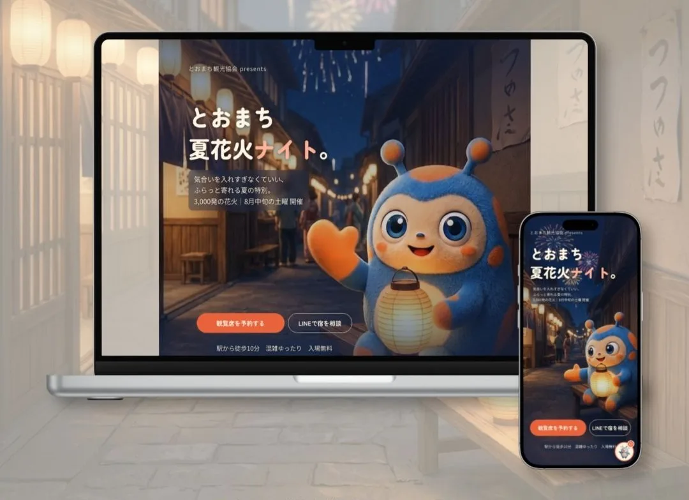
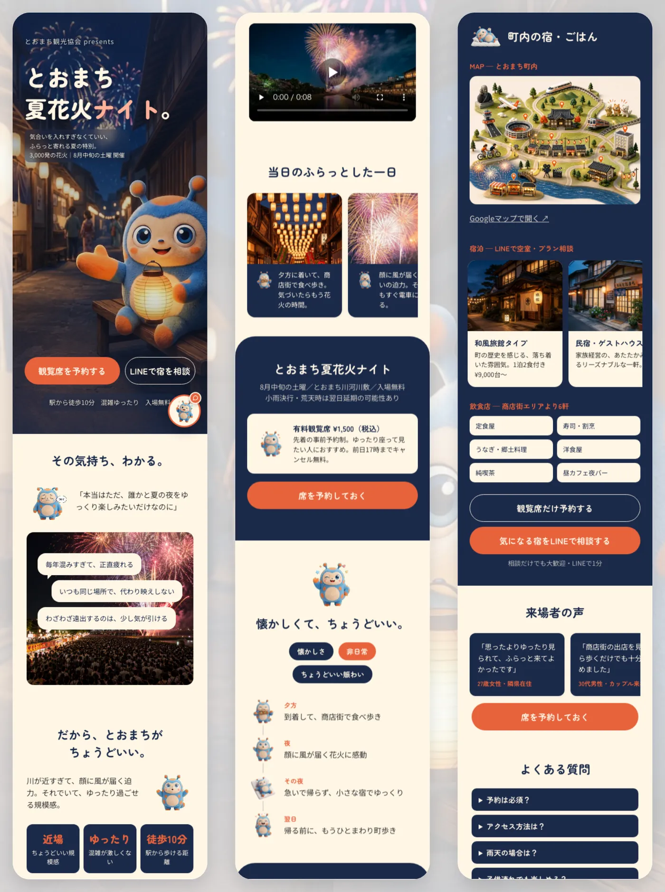

PROJECT / CASE STUDY
とおまち夏花火ナイト
LP / Reels / Chatbot

01
OVERVIEW
概要
架空の観光協会が主催する花火イベント「とおまち夏花火ナイト」を想定し、LP・リール・AIチャットボットを制作しました。町の外に住む人をリールからLPへ案内し、観覧席の予約と宿のLINE相談へつなげます。来場前の疑問にはチャットボットがその場で答え、離脱を減らすことを目指しました。
02
TARGET
ターゲット
近隣の都市で働く、20代半ば〜後半の会社員女性を想定しました。週末はちょっとした非日常でリフレッシュしたい一方で、人混みや行列、念入りな事前計画は苦手。大きな花火大会は、場所取りや帰りの満員電車を考えると「今年は家でいいか」となりがちな人です。
情報はInstagramのリールで探すことが多いため、リールで「気合いを入れずにふらっと行けそう」と感じてもらい、LPで混雑の穏やかさや駅からの近さを確かめて、恋人と観覧席の予約や宿の相談へ進めるように設計しました。
03
DESIGN POINT
工夫したポイント
リール
- 最初の3秒で手を止めるターゲットの本音「花火は見たいけど、人混みは嫌」を冒頭に置きました。音を出さずに見る人が多いため、セリフはすべて大きな字幕で表示しています。
- 「ゆったり感」を映像のテンポでも表現速いカットや大きな音は使わず、落ち着いたテンポで編集しました。イベントの「ふらっと行ける」心地よさを、映像そのもので伝えています。
LP
- 2つのゴールに迷わずつながる構成「共感 → 解決 → 体験 → 予約」の流れで、観覧席の予約と宿のLINE相談の2つへ導きました。混雑や天候について言い切る表現は使わないルールを決めて、信頼を損なわないようにしています。
キャラクター・チャットボット
- キャラクターと映像をすべてAIで生成案内役のキャラクター「とおま」、画像、背景動画をAIで生成しました。チャットを開くボタンにも、動く「とおま」を使っています。
- チャットボットを3段階で構築見た目の画面から始め、スプレッドシートのルールで答える段階、Claude APIで答える段階へと順に作り込みました。
- 答えの正確さと安全性Claude APIはナレッジに書かれた範囲だけで答えるようにし、事実と違う回答を防いでいます。APIキーはバックエンド（Railway）だけが持ち、ページ側には出しません。
- チャットから行動へチャットの中から、観覧席の予約とLINE相談へそのまま進めるようにしました。
04
SCREENS
画面イメージ

05
REELS
リール動画
絵コンテから、キャラクターと音声の生成、テロップ、編集までを担当したリールです。
06
VIDEO
使用した動画
AI動画生成
Visit Website ↗（外部サイトへ移動します）
NEXT PROJECTLa vie belle.mf
制作について相談する →
※クラウドソーシング経由の方は、応募元のメッセージからご連絡ください。